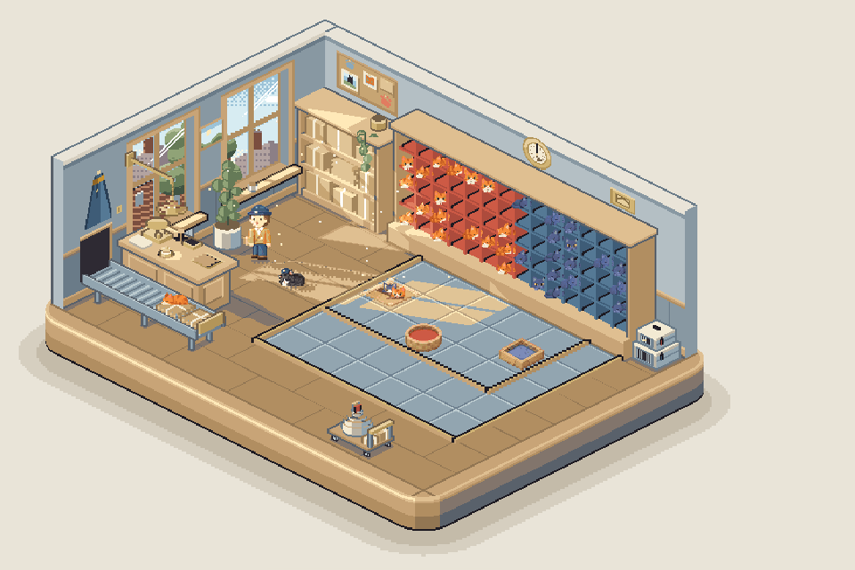
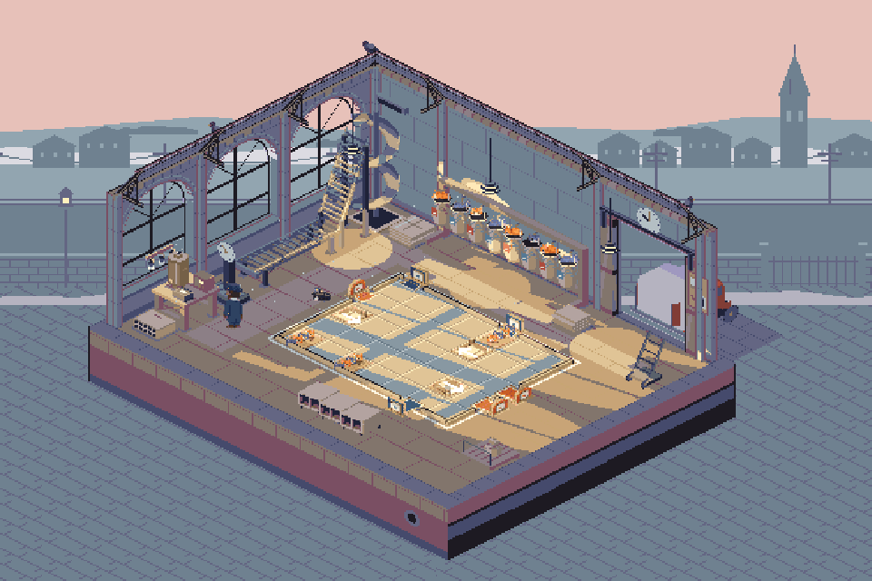

Try the sorting desk
Place your turntables, send the post, then pause to adjust. Two deliveries, each keeping its own arrangement.

1–4Ginger and blue
2 cats · 1 hatch · a quiet beginning
Open delivery
4–15Every door in town
12 cats · 3 hatches · 6 doors
Open deliveryYour unfinished delivery on the map is kept separately.